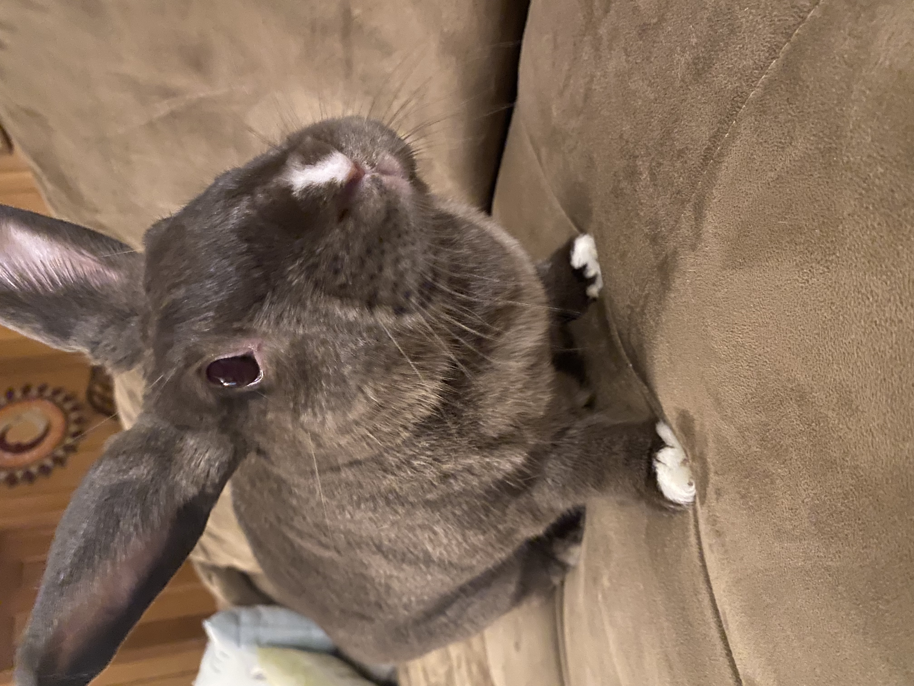

I like cool and rainy days, the kind where you go home and bake cookies because you have nothing better to do.

That right there is my rabbit, I love her a lot. Her name is charlie.
I like space, all kinds. Like the stars, to being left on my own for a bit. There's also music and all that junk that I think a lot of people like. What to say what to say, I guess I'm passionate about a lot of things. I like horror novels, I want to learn japanese to talk to my mom, I love a lot of things. There's a lot. There's plushies, clothes, all the material items and a materialistic mindset. I like food and cooking, I've baked for friends and family. I appreciate my mom's culture and where she came from, I wish to connect to that more. There's a lot of things to do and not a lot of time.
I'm impressed my mom can speak two languages, it's very difficult to learn, and trying to learn it has made me appreciate it even more. Don't mide charlie she likes to float.